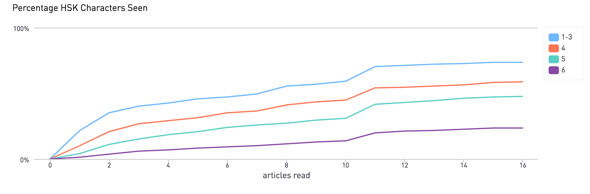
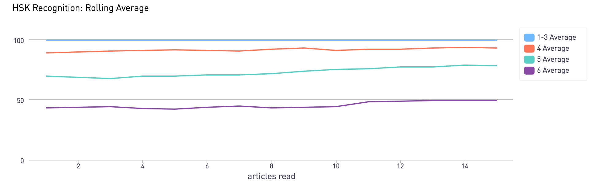

Introduction
The last time I spoke to my uncle was in 2017. My mom was calling him to wish him a happy Lunar New Year, and I spoke a few words at her behest.
“Your Chinese has gotten worse!”, he said immediately after hearing my broken, heavily-accented Mandarin.
My uncle was right, but also, somewhat inaccurate. My Chinese hadn’t just gotten worse - it was never good to begin with. But before I could respond, he was already onto the next topic.
“Are you married yet?”
As I was unable to offer much more than a laugh and a “还没有” (not yet), the conversation ended quickly.
While I haven’t spoken to my uncle in over two years, I have been trying to improve my Chinese during that time. I make an effort to speak in Chinese whenever I speak to my parents, and I found a “language partner” in China who helps me with Chinese while I help with English.
But most of all, I’ve been focusing on getting better at reading Chinese. There are many difficulties associated with written Chinese - it is said that to read fluently, a person must recognize about 3,000 characters, many of which are similar to a frustrating degree:
For one, I can read in my head, without subjecting anyone to my accent. Various technologies have also made looking up unfamiliar words very easy (more on this in a bit). Finally, I find some satisfaction from the pure act of memorization. In high school, I memorized where prominent basketball players attended high school. Applying that penchant towards recognizing Chinese characters seems a bit more useful.
Most of all, while some people may find the idea of memorizing three thousand characters daunting, I think of it as an opporunity to collect some interesting data, and then blog about it.
The Web App
My current goal is to read at HSK 5 proficiency, which means being able to read Chinese newspapers and magazines.
To help me reach this goal, I’m reading articles from the Chinese version of The New York Times, which contains English articles alongside a Chinese translation:

I also wrote a small web app which takes such an article and saves its content. This allows me to alter the reading experience to my liking. I can focus on the Chinese, hiding the English translation until I really need it:

Moreover, while reading an article, I encounter many words I do not recognize. To make the lookup process easier, I load up a modified version of the awesome Zhongwen Chrome Extension. In the original extension, hovering over any Chinese word shows a pop-up with its English definition and pinyin. In my slightly modified version, I need to click on a word in order for the pop-up to show. Clicking is thus an explicit action indicating that I do not recognize a word, which I acknowledge by saving the clicked word to a database. The web app then augments the marked word with metadata such as its HSK classification and frequency.

I also modified the extension to mark and save individual characters that I do not know as well.
So far, 15 or so articles in, the most commonly marked words and characters have the distinct flavor of news article lexicon:
Top 5 Marked Words
| entry | pinyin | count | definition |
|---|---|---|---|
| 刑事 | xíng shì | 6 | criminal; penal; |
| 逮捕 | dài bǔ | 6 | to arrest; to apprehend; an arrest; |
| 试图 | shì tú | 6 | to attempt; to try; |
| 导致 | dǎo zhì | 6 | to lead to; to create; to cause; to bring about; |
| 庇护 | bì hù | 5 | asylum; shelter; to shield; to put under protection; to take under one’s wing; |
Top 5 Marked Characters
| entry | pinyin | count | definition |
|---|---|---|---|
| 致 | zhì | 13 | send, deliver, present; cause |
| 审 | shěn | 12 | examine, investigate; judge |
| 营 | yíng | 12 | encampment, barracks; manage |
| 积 | jī | 11 | accumulate, store up, amass |
| 执 | zhí | 11 | hold in hand; keep; carry out |
HSK Data
There are a total of 6 HSK levels, ranging from learners who “can understand and use some simple Chinese characters and sentences” to those “who are capable of smoothly expressing themselves in written or oral form.” Moving from one to level to the next requires doubling the amount of recognized words from the previous level. This is somewhat apparent in the unique words I’ve encountered so far, classified by their HSK level. Thus far, I’ve encountered about 23.5% of level 6 words, 47% of level 5 words, and 59% of level 4 words.

(TODO)
Using the data I collected about the unfamiliar words which I marked, I can detect a slow by steady increase in the words I recgonize by HSK level: 
The chart above is gold for me: I’m always more motivated to do work on something when I can see visual signs of improvement.
Future Topics
I built this web app to track my own progress towards reading at the HSK level 5, with an end goal is to be able to read Chinese literature without much difficulty.
The Chinese language is a vast, at times frustrating, but always fascinating language. As such, there are other aspects within the language which I wish to explore, such as its grammar, tones, relationships betweeen characters and words, and “成语” (idioms typically consisting of 4 characters).
Posts in this blog will detail my path to my goal, along with the types of digressions I describe above. Each post will be aided by the data that I collect about the characters and words that I encounter.
I hope you stay tuned!